2 Getting Started
2.1 Main view
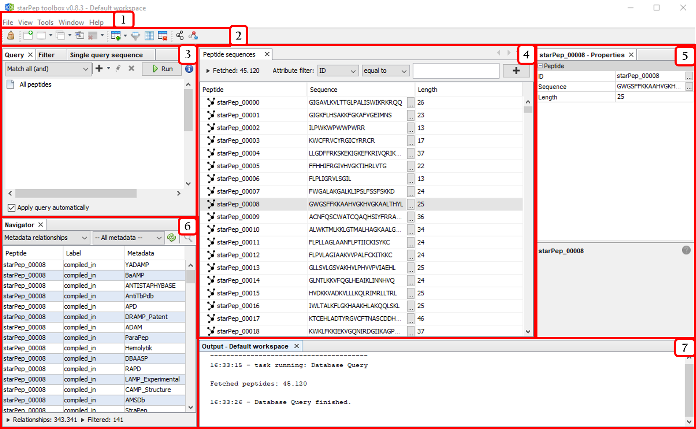
- Menu bar
- Quick access bar
- Tools panel
- Central panel
- Properties panel
- Navigator panel
- Output panel
The above windows panels may be opened from the Window option in the menu bar.
2.3 Quick access bar
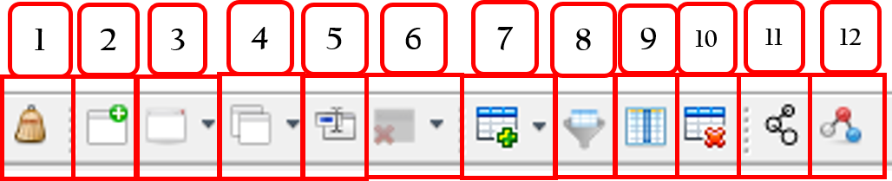
These options may be shown/hidden from the menu entry: View ➡️ Toolbars ➡️ [options].
Shortcut to:
- File ➡️ Clean project
- File ➡️ New workspace
- File ➡️ Select workspace
- File ➡️ Copy data to ➡️ New workspace
- File ➡️ Rename current workspace
- File ➡️ Remove workspace
- Tools ➡️ Molecular features ➡️ Extraction
- Tools ➡️ Molecular features ➡️ Selection
- Tools ➡️ Molecular features ➡️ Explorer
- Tools ➡️ Molecular features ➡️ Removing
- Tools ➡️ Network ➡️ Metadata Network
- Tools ➡️ Network ➡️ Similarity Network
2.4 Tool panels: an overview
2.4.1 Query panel
This panel may be opened from Tools ➡️ Peptide querying.
The recovered peptides are those linked to the specified metadata nodes.
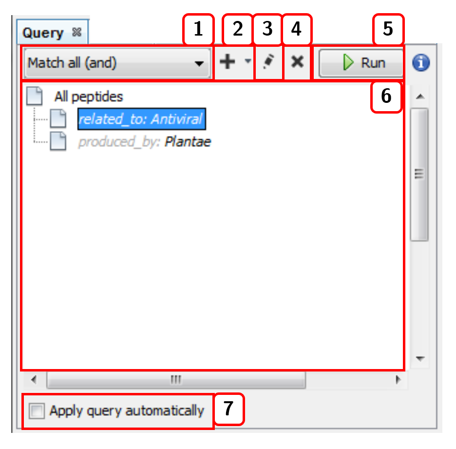
- Selects the joining condition for the query criteria:
Match all (and)orMatch all (or). - Adds a new term (linked metadata) to the query.
- Edits the query term selected.
- Deletes the query term selected.
- Runs the query.
- List of current query terms.
- Applies the query automatically with each change.
2.4.2 Filter panel
This panel may be opened from Tools ➡️ Peptide filtering.
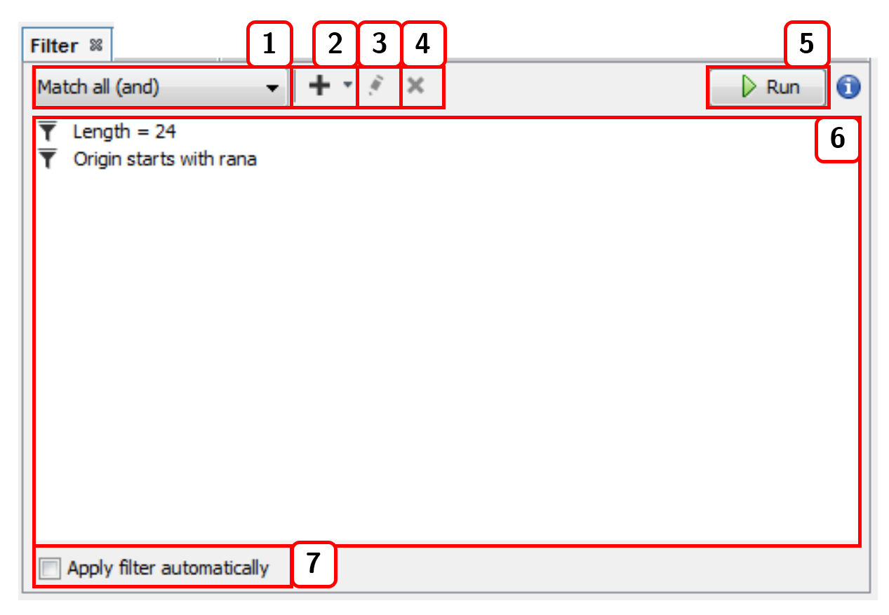
- Selects the joining condition for the filter criteria:
Match all (and)orMatch all (or). - Adds a new filter.
- Edits the selected filter.
- Deletes the selected filter.
- Runs the filter.
- List of current filters.
- Applies the filter automatically with each change.
2.4.3 Sequence search
This panel can be opened from Tools ➡️ Peptide search by ➡️ [sequence search option]. For instance, Single query sequence:
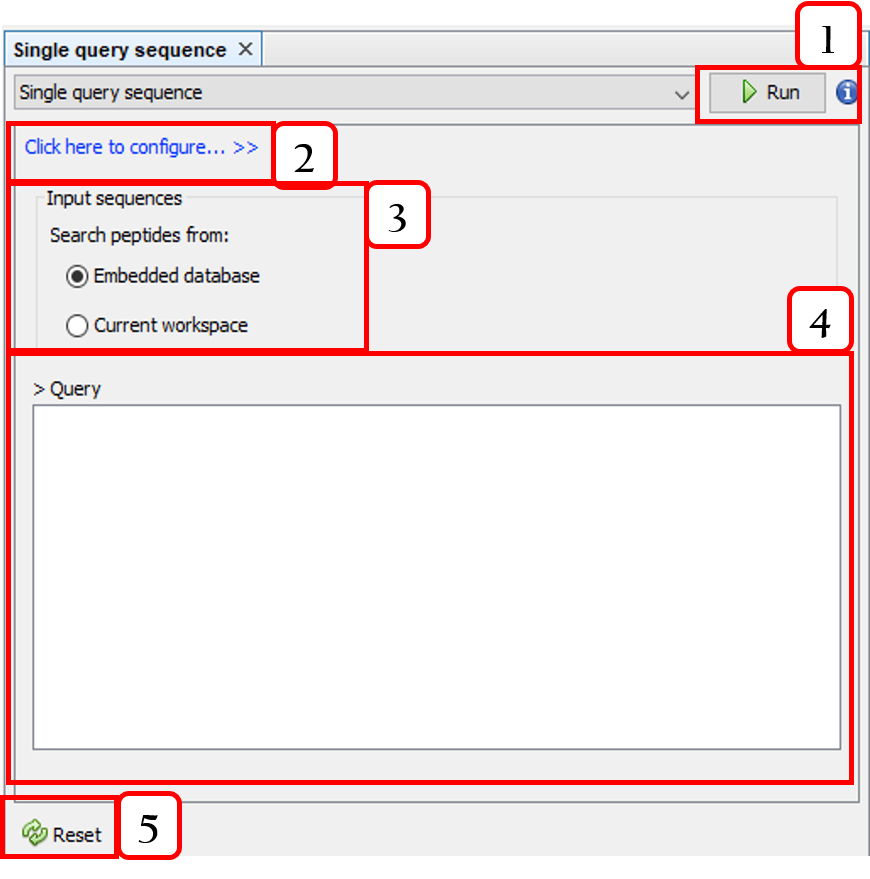
- Runs the query.
- Configures the sequence alignment.
- Selects the target sequences.
- Input sequence.
- Resets the query.
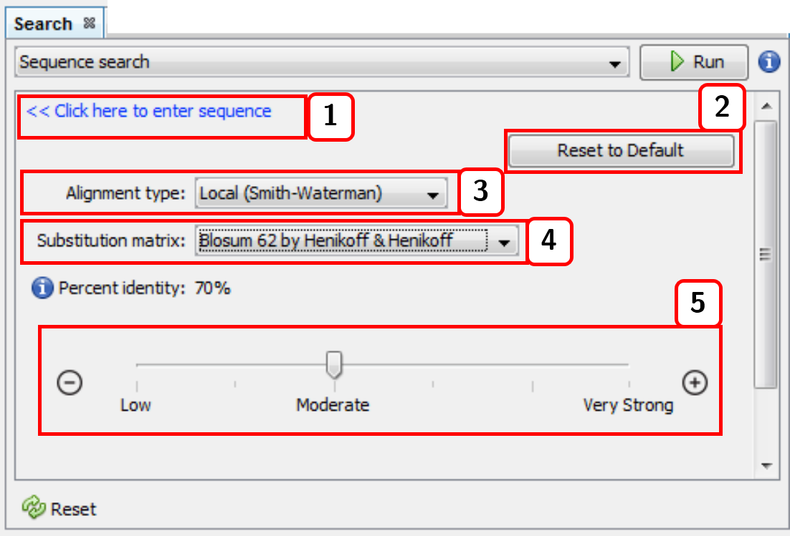
- Returns to the input sequence view.
- Resets the alignment configuration.
- Alignment type (local or global).
- Substitution matrix.
- Percent identity (default: 98%).
2.4.4 Molecular feature extraction
This option is accessible from the menu option Tools ➡️ Molecular features ➡️ Extraction ➡️ [molecular descriptor option]. For instance, All descriptors:
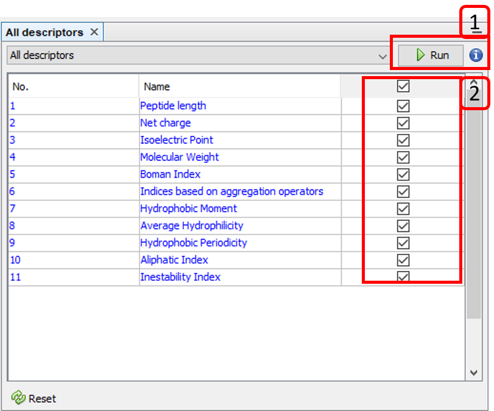
- Runs the selected molecular descriptor algorithms.
- Selects/Unselect molecular descriptor algorithms.
The calculated molecular descriptors can be removed by accessing the menu options Tools ➡️ Molecular features ➡️ Removing.
Besides, calculated molecular features can be displayed in the columns list at the center panel (enabling molecular feature filtering). This option is accessible from the menu option Tools ➡️ Molecular features ➡️ Explorer:
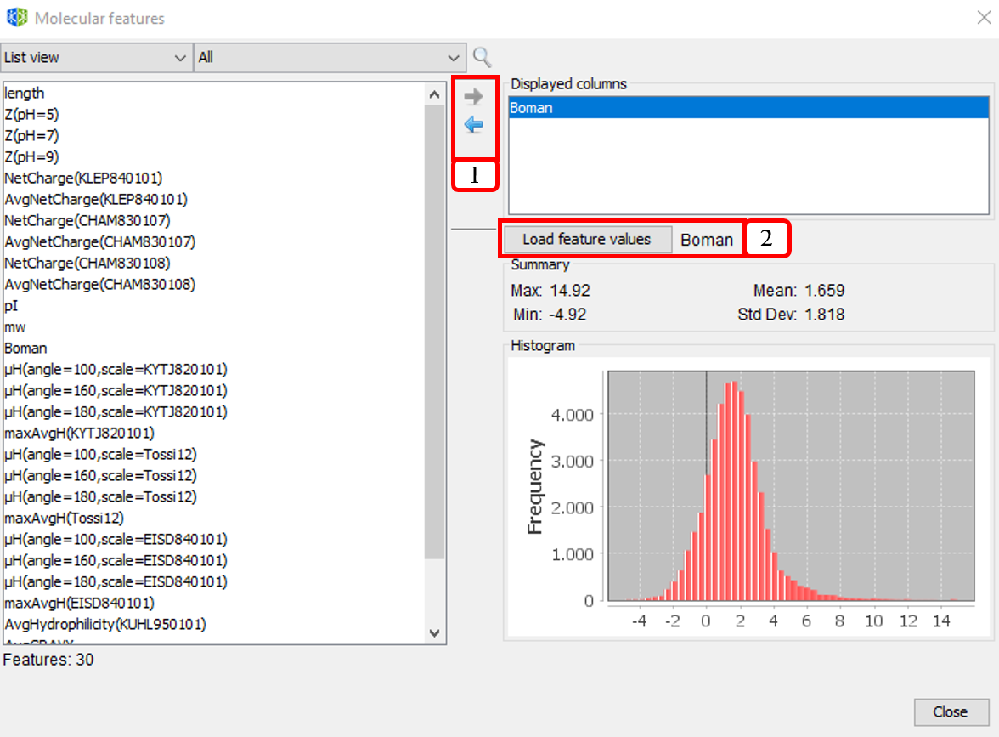
- Adds/Removes molecular descriptors to/from the displayed columns list.
- Visualizes the histogram and data summary (max, min, mean, and standard deviation of molecular feature values.
2.4.5 Molecular feature selection
This option is accessible from the menu option Tools ➡️ Molecular features ➡️ Selection ➡️ [unsupervised feature selection]. For instance, Filtering & subset optimization:
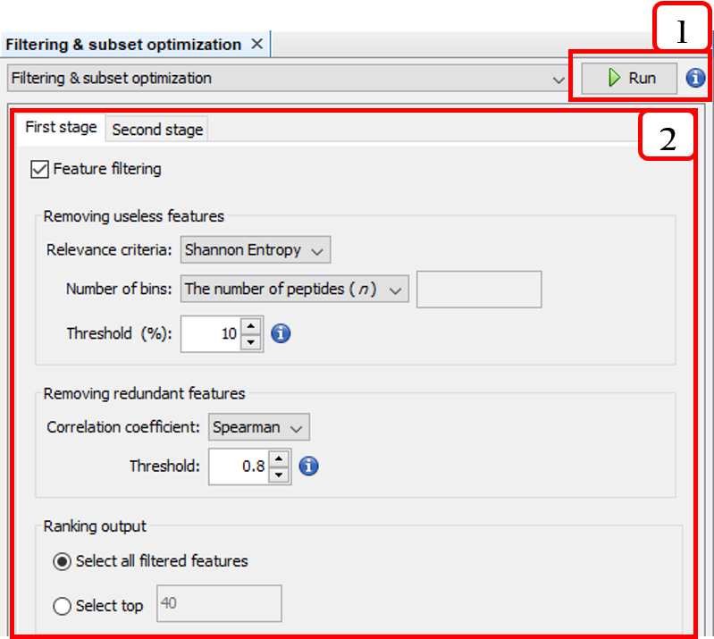
- Runs the two-stage unsupervised feature selection.
- Configures the two-stage unsupervised feature selection.
2.5 Center panels
2.5.1 Peptide sequences window
This window is opened from Window ➡️ Peptide sequences. The Peptide sequences window shows the result of applying a query, filter, or search. The rows showed can also be filtered by attributes such as ID, Sequence, Length, or calculated features.
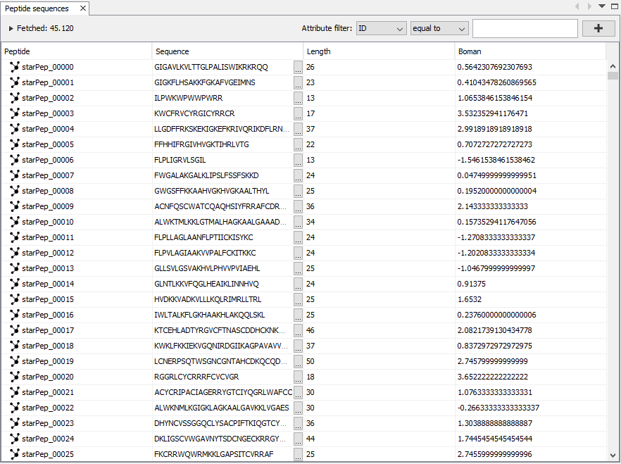
2.5.2 Network visualization window
This window is opened from Window ➡️ Network Visualization. It consists of two views: Scene and Preview. The Scene view allows to customize some visual properties of the network such as background color, zoom, position, and individual colors for edges and nodes. The options highlighted in Fig. 2.11 are the following:
- Switch background.
- Zoom options.
- Selector. It allows to change the node diameter of the cursor while selecting nodes.
- Additional options. It allows to enable or disable the options
Autoselect neighborsandShow peptide labels(we recommend disabling the latter in order to render clearer graphs in metadata network analysis). - More advanced sizing and coloring options for nodes. By pressing
More.../Less..., the options are shown/hidden. - Network rendering area.
- Node label options. The first one allows to show/hide the node labels. The second one brings three options to modify node label size:
Fixed,Scale size, andNode size. This optionNode sizeis handy for adjusting the label size proportionally to the node size. The third one modify the label color options. There are three choices:Unique,Object, andText. - Node label font properties.
- Node label size.
- Two edges options. The first one shows/hides edges. The second one enables edges to have the attached node color.
- Edge thickness.
- Shows/Hides edge labels.
- Edge label font properties.
- Edge label size.
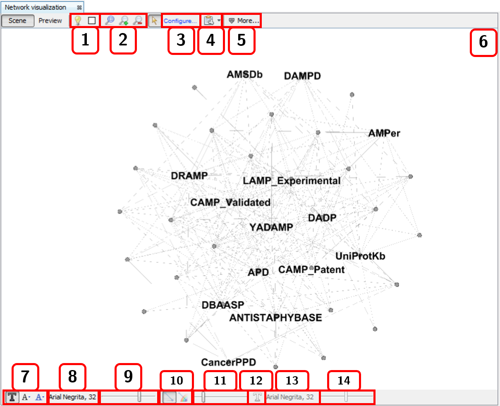
When you right-click the mouse on the scene view, a context menu is displayed.
The Preview view shows the rendered the graph according to the calculated layout and all the configurations. Attractive networks may be rendered in this other view. To update the drawing, press the Refresh button.
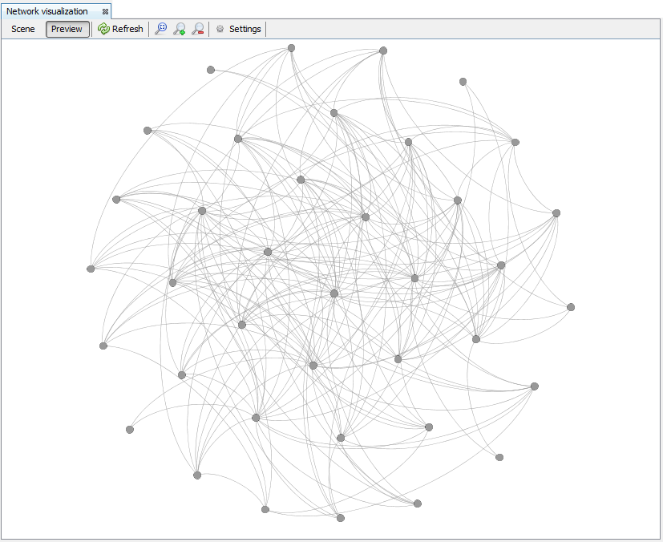